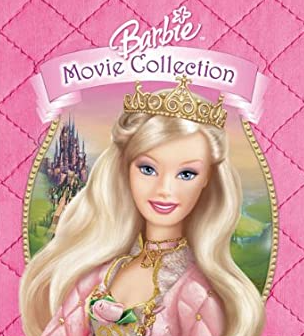

A few of the finest barbie movie connoisseurs got together and watched a few of the movies.
With their exquisite taste they delved deep into the barbie universe, and conjured up some of
their best, if not finest works yet.
The Critics
these are just things the critics want the people to know about them, the pictures are how they wanted to be visually presented.
"As a child i was baptized in the sweat of my fellow film critics, the cum of the moviegoer, the hotdog water.
People usually ask me "why do you like movie" i say "I dont like movie, i LOVE movie", then I laugh at them and step on their toes.
I am the definition of a esteemed critic, I won't take "its my life project" or "I sold my home for this" as an awnser to a shit movie.
I look DEEP into movie lore, unlike other critics who name themselves after a dish! haha!"
-Boris
"I am a renown co-host of the official Martin with gay men podcast.
As a Game grump and baby yoda fan, I think of myself having the higher mental capacity to actually rate these masterpieces of movies.
Annoys me when people think they can just drop reviews without actually taking the movie appart piece by piece, like a baked egg-based dish originating in France in the early eighteenth century.
Combined with various other ingredients it can be served as a savory main dish or sweetened as a dessert."
-Sofie
"I, xXChris_cream_LordXx, am the best quickscoper in all of the land of Pc(master race), and one day,
everyone will worship me and my godly fingers. I, come from a long line of MLG pros. My father is Faker, the god of the League of
Legends and other MOBAs realm, and his father was King Jeremiah CDXX, the ruler over all of Vape Nation. Now, I know what you’re thinking.
You think that I’m just one of those stupid 12 year olds
that suck at life and just scream over mics, but I can assure you that I am far from that. I turned 13 just last week and I am far more
superior and danker than anyone. As my accomplishments sing, and my past lives proclaim, I am definitely suited to to be worshiped because
I am truly the best of the best in all of the realms. If any oppose me, I am sure to conquer them in a 1v1. I would begin by toying with
my foe, and shorty after having them undermine my ability, I would 100 to 0 them in a blink of an
eye with my extremely potent memes and sniping abilities. I, xXChris_cream_LordXx, as you can see am
clearly the best of the best in all of the land."
-xXChris_cream_LordXx
"I’ve worked in film as a critic, lecturer and programmer for four decades. I was editor of the film pages
of Time Out for many years and head of programming for a decade and a half at BFI Southbank, formerly the National
Film Theatre. I’ve also written, contributed to and edited a number of books. Here, I’ll be writing more informally
about things that take my interest – things I hope might also interest you: not just films and film folk, but music and
music people, the other arts.
Maybe even, as time goes on, birdlife, places, other stuff. We’ll see…"
-Elliott